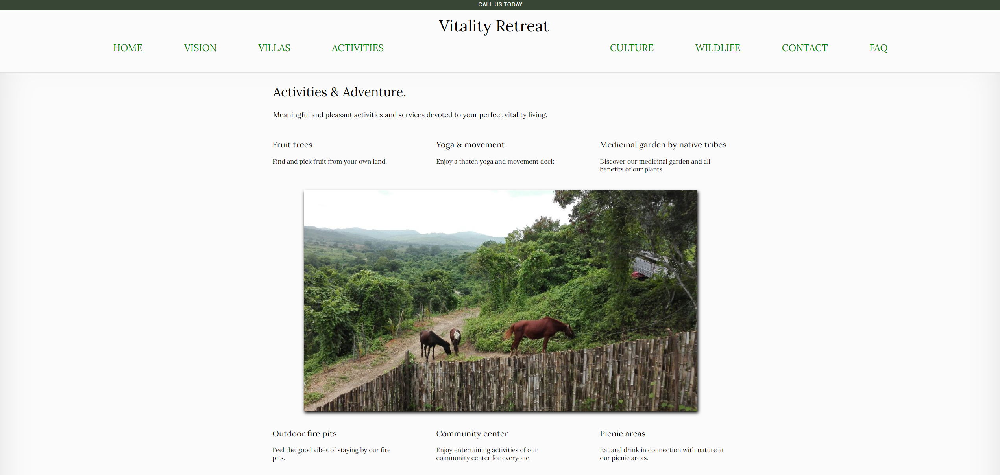
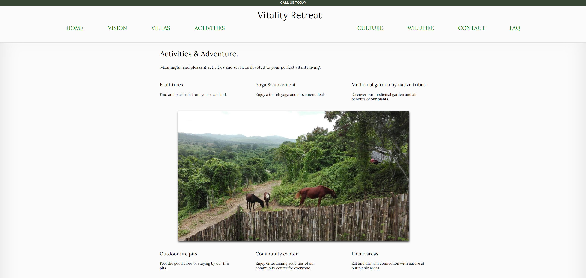

Java
2 years of object oriented programming on a foundational level to build small applications and console programs for school and projects.
View all projects
I am a programming developer, a livestreaming content creator on Twitch, and a first year computer science student at the British Columbia Institute of Technology. I have started personal projects and hobby interests ranging from circuits, breadboards, electronics, software, hardware, and technology in an ever-changing and fast paced landscape. I have beginner knowledge of Java, Python, and MySQL, as well as moderate knowledge of HTML and CSS. My beginner journey of learning JavaScript begins here, and now, with COMP 2132, from the expertise of BCIT instruction.
2 years of object oriented programming on a foundational level to build small applications and console programs for school and projects.
View all projects
One term of Python programming from COMP 1516's instructor Mathew Linder. Beginner algorithms and data structures introduced and constructed for applications
View all projects
Experience with HTML, CSS, and Bootstrap, to create this very assignment responsive website, thanks to the highly structured and pragmatic teaching of BCIT's Jeff Parker.
View all projects
My story is different. I am taking COMP 2132 because I voluntarily chose to enter PTS after starting in the fulltime CST program. I took the first two terms of CST at the Burnaby campus, in person, and realized I wanted to learn the material at a more manageable pace. I completed and passed all of term 1 courses. Term 1 felt like a good introduction to the material, and term 2 contined that trend, but this is where I, and many others, fall off the rails. I had to take a step back and re-evaluate my ability to learn 7 courses at once.
I ended up in a random phone call with Kevin Cudihee, the CST program head. I had phoned the BCIT front desk reception. They asked if I wanted to speak to anyone in particular, I said someone at PTS for information. She said I needed to ask for a name in the department, I said the "only name I am familiar with was Kevin from a consultation alongside Donna Turner during the first term of fulltime CST."" Reception handed me right to Kevin's personal number, and I knew it was his personal number when he answered with a "hello". I had a moment of panic, quickly told him who I am, what my plan is, and how I want to get there. This phone call mistakenly turned into a 40 minute conversation, but He responded rapidly and assured me my education goals would be met.
The conversation single-handedly set a course for a new path, one that I should had started two terms earlier. It was apparent to me education was not about a race to the finish line, but a steady, consistent, journey for knowledge, that must be developed and harnassed into a solid foundation that lasts a lifetime. That foundation began the day I registered for PTS.
I'm still technically in the fulltime program doing a side-plan for Rahul, but I may stay part time. I am starting to prefer it. I'll make the decision whether to return to fulltime next term when my PTS part is complete.
We build our computer systems the way we build our cities: over time, without a plan, on top of ruins. Ellen Ullman
Here is a colletion of websites I built during the summer break. I used the skills gained from COMP 1850 to piece together an assortment of sites to hone my skills and be ready for COMP 2132.
This is a site I made for my brother in Ecuador for his beach front hotel that he's developing for tourists called Ecuador Vitality Retreat. It mirrors the style of Eco Villas. Some links are broken, I am still working on it. Yes I made this site! Except the form page.

This is a project website I made for my friend, Jess. She loved the style of the Kindred team and wanted a version of her own. I developed this using a grid layout.

This is a school friend of mine that wanted a politics website, I built one using the style of a wix template, except I built mine from scratch.
Note: my political views are neutral, I built the site as a hobby for experience.
This is a project website I made for a relative that sells nutritional supplements and oils.
Note: my preference of oil is low, I built it as a hobby for experience. I use motor oil instead.
Things I hope to learn this term:
| COMP 2132 | COMP 2501 | COMP 1603 |
|---|---|---|
| JavaScript | Java | MySQL |
| React | Classes | Databases |
| Node | Objects | Scripts |
| Party! | Abstract | SSMS |
Evolutions of my home office workspace where I study, study, work, and study some more. Mainly BCIT programs, including my current list of courses: COMP 2132, COMP 1630, and COMP 2501.


With JavaScript I could make these images clickable and smoothly expandable! Soon I will learn such tricks. But at least I can do box-shadow in CSS without JavaScript!
I decided to build this website from scratch to gain a better understanding of CSS and HTML technology. I will be implementing some of my programs to github, and make my projects and website easily accessible to the audience, as well as potential employers. Front end was not my strongest, however, it has become a personal favorite through the art of practice and diligence. These websites have allowed me to experiment outside my comfort zone, and get ready for the job world in tech.
The LinkedIn link works below, the other social media links won't because I don't have facebook or instagram.
This website is a collection of summer work combined to one place, and built within the first week of COMP 2132. Thanks for the great teaching of 1850, I will be and am ready to learn the next phase of development, JavaScript!
Mmm, JavaScript
 
